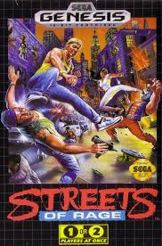
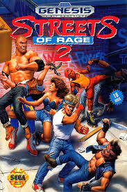
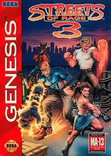
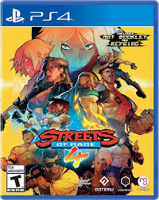

Streets of Rage is a classic side-scrolling beat-'em-up video game series developed and published by Sega, originally debuting in 1991 on the Sega Genesis. The series follows a group of vigilante ex-police officers—Axel Stone, Blaze Fielding, and others—as they fight to clean up their crime-ridden city from the grip of the nefarious crime lord Mr. X and his criminal syndicate. Known for its fast-paced brawler gameplay, vibrant pixel art, and especially its iconic electronic dance music soundtracks composed by Yuzo Koshiro and Motohiro Kawashima, Streets of Rage has become a beloved franchise in retro gaming. After a long hiatus, the series was revived with Streets of Rage 4 in 2020, which introduced updated visuals and gameplay while staying true to the spirit of the originals.
Major Games
Streets Of Rage
Streets of Rage is a side-scrolling beat-'em-up game released by Sega in 1991 for the Sega Genesis. The game follows three former police officers—Axel, Blaze, and Adam—who take to the streets to battle a powerful criminal syndicate led by the mysterious Mr. X, after corruption spreads through the city’s police force. Players fight through eight gritty urban levels filled with waves of enemies, using punches, kicks, throws, and special moves, including a powerful police backup attack that clears the screen. Renowned for its co-op multiplayer, tight combat mechanics, and a groundbreaking electronic soundtrack by Yuzo Koshiro, Streets of Rage became a defining title of the 16-bit era and set the stage for its popular sequels.
Streets of Rage 2
Streets of Rage 2 is a classic side-scrolling beat 'em up game released in 1992 for the Sega Genesis, and it serves as a sequel to the original Streets of Rage. The game follows four heroes—Axel Stone, Blaze Fielding, Max Thunder, and Eddie "Skate" Hunter—as they battle their way through the city to rescue Skate’s brother, Adam, who has been kidnapped by the evil crime syndicate led by the returning villain, Mr. X. Featuring improved graphics, a memorable electronic soundtrack by Yuzo Koshiro, and refined gameplay mechanics, Streets of Rage 2 is widely praised for its cooperative play, diverse enemy types, and satisfying combat system, cementing its status as one of the best beat 'em up games of its era.
Streets of Rage 3
Streets of Rage 3, released in 1994 for the Sega Genesis, is the third installment in the iconic beat 'em up series. The game continues the saga of vigilante heroes Axel, Blaze, and Skate, joined by newcomer Dr. Zan, as they face a new threat from Mr. X and his sinister robotics organization, RoboCy. The plot involves a conspiracy to replace key city officials with robotic clones, adding a sci-fi twist to the classic brawler formula. With faster gameplay, new moves, branching story paths, and a more complex narrative than its predecessors, Streets of Rage 3 pushed the series forward, though it received mixed reactions due to its increased difficulty and censorship changes in its Western release.
Streets of Rage 4
Streets of Rage 4, released in 2020, marks the long-awaited return of the beloved beat 'em up series after a 26-year hiatus. Set ten years after the events of Streets of Rage 3, the game follows returning heroes Axel Stone and Blaze Fielding, joined by newcomers Cherry Hunter (daughter of Adam Hunter) and Floyd Iraia, as they take on the children of Mr. X—the Y Twins—who are using mind control to corrupt the city. Featuring hand-drawn visuals, a dynamic soundtrack blending retro and modern styles, and refined yet faithful combat mechanics, Streets of Rage 4 successfully revitalizes the franchise for both old fans and new players, earning praise for its stylish presentation, satisfying gameplay, and nostalgic yet fresh feel.